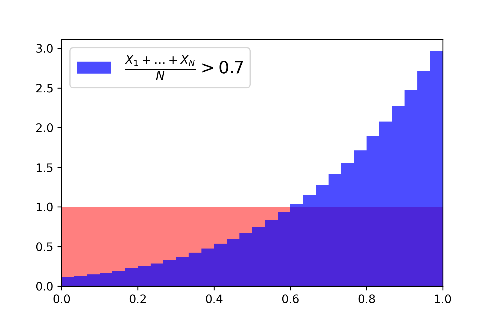

Sanov’s Theorem
Consider a random variable \(X\) on the finite alphabet \(\{a_1, \ldots, a_K\}\) with \(\mathop{\mathrm{P}}(X=a_k) = p_k\). For \(N \gg 1\), consider a sequence \((x_1, \ldots, x_N)\) obtained by sampling \(N\) times independently from \(X\) and set
\[ \widehat{p}_k = \frac{1}{N} \, \sum_{i=1}^N \, \mathbf{1} {\left( x_i = a_k \right)} \]
the proportion of \(a_k\) within this sequence. In other words, the empirical distribution obtained from the samples \((x_1, \ldots, x_N)\) reads
\[ \widehat{p} = \sum_{k=1}^K \, \widehat{p}_k \, \delta_{a_k}. \]
Indeed, the LLN indicates that \(\widehat{p}_k \to p_k\) as \(N \to \infty\), and it is important to estimate the probability that \(\widehat{p}_k\) significantly deviates from \(p_k\). To this end, note that for another probability vector \(q=(q_1, \ldots, q_K)\) the probability that
\[ (\widehat{p}_1, \ldots, \widehat{p}_K) \; = \; (q_1, \ldots, q_K) \]
is straightforward to compute and reads
\[ \mathop{\mathrm{P}}(\widehat{p} = q) \; = \; \binom{N}{N q_1, \ldots, N q_K} \, p_1^{N q_1} \ldots p_R^{N q_K}. \]
Stirling’s approximation \(m! \asymp m \, \ln(m)\) then gives that
\[ \mathop{\mathrm{P}}(\widehat{p} = q) \; \asymp \; \exp {\left( -N \cdot \mathop{\mathrm{D_{\text{KL}}}}(q,p) \right)} \]
where \(\mathop{\mathrm{D_{\text{KL}}}}(q,p) = \sum_{k=1}^K q_k \, \log[q_k / p_k]\) is the Kullback–Leibler divergence of \(q\) from \(p\). In other words, as soon as \(q \neq p\), the probability of observing \(\widehat{p} \approx q\) falls exponentially quickly to zero. With the language of Large Deviations, one can make this statement slightly more precise, rigorous and general, but it is essentially the content of Sanov’s Theorem.
Rare events happen in the least unlikely manner
Given a list of mutually exclusive events \(E_1, \ldots, E_R\) and the knowledge that at least one of these events has taken place, the probability that the event \(E_k\) was the one that happened is \(\mathop{\mathrm{P}}(E_k) / [\mathop{\mathrm{P}}(E_1) + \ldots + \mathop{\mathrm{P}}(E_R)]\). The implication is that if all the events are rare, that is \(p_k \approx e^{-N \, I_k} \ll 1\), and it is known that one event has indeed occurred, there is a high probability that the event with the smallest \(I_k\) value was the one that happened: the rare event took place in the least unlikely manner.
Consider an iid sequence \((X_1, \ldots, X_N)\) of \(N \gg 1\) discrete real-valued random variables with \(\mathop{\mathrm{P}}(X = a_k) = p_k\) and mean \(\mathop{\mathrm{E}}(X) \in \mathbb{R}\). Suppose one observes the rare event
\[ \frac{1}{N} \sum_{i=1}^N x_i \geq \mu \tag{1}\]
for some level \(\mu\) significantly above \(\mathop{\mathrm{E}}(X)\). Naturally, the least unlikely way for this to happen is if \((x_1 + \ldots + x_N) / N \, \approx \, \mu\). Furthermore, one may be interested in the empirical distribution \(\widehat{p}\) associated to the sequence \((x_1, \ldots, x_N)\) when the rare event Equation 1 does happen. The least unlikely empirical distribution is the one that minimizes \(\mathop{\mathrm{D_{\text{KL}}}}(\widehat{p}, p)\) under the constraint that
\[ \sum_{i=1}^K a_k \, \widehat{p}_k = \mu. \tag{2}\]
The function \(\widehat{p} \mapsto \mathop{\mathrm{D_{\text{KL}}}}(\widehat{p}, p)\) is convex and the introduction of Lagrange multipliers shows that the solution to this constraint minimization problem is given by the Boltzmann distribution \(p_{\beta_\mu}\) defined as
\[ p_{\beta_\mu}(a_k) = \frac{ p_k \, e^{-\beta_{\mu} \, a_k} }{Z(\beta_{\mu})}. \tag{3}\]
The parameter \(\beta_{\mu} \in \mathbb{R}\) is chosen so that the constraint Equation 2 be satisfied and the minus sign is to follow the “physics” convention. Note in passing that, in fact, the joint function \((\widehat{p},p) \mapsto \mathop{\mathrm{D_{\text{KL}}}}(\widehat{p}, p)\) is convex! As usual, if one defines the log-partition function as \(\Phi(\beta) = -\log Z(\beta)\), with
\[ Z(\beta) \; = \; \sum_{k=1}^K \, p_k \, e^{-\beta \, a_k}, \]
one obtains that the constraint is equivalent to requiring \(\mu = \frac{d}{d \beta} \Phi(\beta) \mid_{\beta = \beta_\mu}\). Furthermore, since \(\Phi\) is smooth and strictly concave, so is the function \(\beta \mapsto \left< \mu, \beta \right> - \Phi(\beta)\), so that the condition \(\mu = \frac{d}{d \beta} \Phi(\beta) \mid_{\beta = \beta_\mu}\) is equivalent to setting
\[ \beta_{\mu} \; = \; \mathop{\mathrm{argmin}}_{\beta \in \mathbb{R}} \; \left< \mu, \beta \right> - \Phi(\beta). \]
Naturally, one can now also estimate the probability of the event \(\mathop{\mathrm{P}}[(X_1 + \ldots + X_N)/N \approx \alpha]\) happening since one now knows that it is equivalent (on a log scale) to \(\exp[-N \, \mathop{\mathrm{D_{\text{KL}}}}(p_{\beta_\mu}, p)]\). Algebra gives
\[ \begin{align} \mathop{\mathrm{D_{\text{KL}}}}(p_{\beta_\mu}, p) &= \Phi(\beta_\mu) - \left< \mu, \beta_\mu \right>\\ &= \max_{\beta \in \mathbb{R}} \; \Phi(\beta) - \left< \mu, \beta \right>. \end{align} \]
As a sanity check, note that since \(\Phi(0)=0\), we have that \(\mathop{\mathrm{D_{\text{KL}}}}(p_{\beta_\mu}, p) \geq 0\), as required. The statement that
\[ \frac{1}{N} \, \log \mathop{\mathrm{P}} {\left\{ \frac{X_1 + \ldots + X_N}{N} \; \approx \; \mu \right\}} \; = \; - I(\mu) \]
with a (Large Deviation) rate function given by
\[ I(\mu) \; = \; \max_{\beta \in \mathbb{R}} \; \Phi(\beta) - \left< \mu, \beta \right> \]
is more or less the content of Cramer’s Theorem. The rate function \(I(\mu)\) and the function \(\log Z( \textcolor{red}{-}\beta)\) are related by a Legendre transform.
Example: averaging uniforms…
Now, to illustrate the above discussion, consider \(N=10\) iid uniform random variables on the interval \([0,1]\). It is straightforward to simulate these \(N=10\) uniforms conditioned on the event that their mean exceeds the level \(\mu = 0.7\), which is a relatively rare event. When this is done repetitively and the empirical distribution is plotted, the resulting distribution is as follows:

Indeed, the distribution in blue is (very close to) the Boltzmann distribution with density \(\mathcal{D}_{\beta}(x) = e^{-\beta \, x} / Z(\beta)\) with \(\beta \in \mathbb{R}\) chosen so that \(\int_{0}^{1} x \, \mathcal{D}_{\beta}(dx) = \mu\).